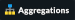

1. Introduction
Checkmk Business Intelligence — that admittedly sounds a bit lofty for what is basically a simple thing. But this name describes the core of the BI module in Checkmk pretty well. It is all about deriving the overall state of business-critical applications from the many individual state values, and presenting them clearly.
Take as an example the service email, which is still indispensable for many companies. This service is based on the correct functioning of a variety of hardware and software components — from specific switches, to SMTP and IMAP services, and to infrastructure services such as LDAP and DNS.
The failure of an essential building block is not a problem if this has been designed to be redundant. Conversely, a problem may occur in a service that at first glance has nothing to do with email, but which can have much more serious effects. A simple look at a list of services in Checkmk is not always meaningful — at least not for everyone!
Checkmk BI allows you to derive a summary of the overall health of an application from the current state of individual hosts and services. You use BI rules to define — in a tree-like structure — how various elements are interdependent. Each application is then overall OK, WARN or CRIT. The Information about the condition and the dependencies can be accessed in various ways:
A display of the overall state of an application in the GUI.
Calculation of the availability of an application.
Notifications in the event of a problem, or even a failure of an application.
Impact Analysis: A service is in a CRIT state — so which applications are affected?
Planning maintenance times and 'what if…?' analyses.
In addition there is the possibility of using the tree representation in BI for a 'drill down' view of the state of a host and all of its services.
A distinctive feature of Checkmk’s BI, unlike comparable tools in the monitoring field, is that here Checkmk also works with a rule-based structure. This allows you to dynamically describe an indefinite number of similar applications with a generic set of rules. That immensely facilitates the work and helps to avoid mistakes — especially in very dynamic environments.
2. Configuration Part 1: The first aggregation
2.1. Terminology
Before you begin step by step with the practical application of BI, you first need know a few terms:
Each application formalized with BI is called an Aggregation, since a general state is aggregated from many individual states.
An aggregation is constructed as a 'tree' of objects. These objects are called nodes. The bottom nodes — the leaves of the tree — are the hosts and services in your Checkmk instances. The remaining nodes are artificially-created BI objects.
Each node is created by a rule. This also applies to the root of the tree — the topmost node. These rules determine which nodes hang under another node, and how from their states the state of the higher node is to be determined.
The top node of an aggregation — the root of the tree — is also generated with a rule. In this way a rule can generate multiple aggregations.
2.2. An example
The easiest way understand this is to use a concrete example.
We have thought up the 'Mystery Application' for this article.
Suppose that this is an important application in an unspecified company.
Among other things, five servers and two network switches are playing
an important role. So that you can better understand the example,
we use simple names like srv-mys-1 or switch-1.
The following diagram gives a simple overview of the structure:
The two servers
srv-mys-1andsrv-mys-2form a redundant cluster on which the actual application runs.srv-dbis a database server that stores the application’s data.switch-1andswitch-2are two redundant routers connecting the server network to a higher network.In each there is a timer
srv-ntpwhich ensures an exactly-synchronous time.In addition the server
srv-spoolworks here and passes the results calculated by the Mystery Application into a spool directory.From the spool directory the data is picked up by a mysterious parent service.
If you want to work through the following steps one by one, you can simply replicate the monitoring objects as shown in our example. For a test it is sufficient if you clone an existing host several times and name the clones accordingly. Later there are a few services to be added into the game, for which you then have time to record the relevant hosts in the monitoring. Even there you can cheat again: with simple dummy-local-checks you will quickly get matching services to play with.
The hosts will then look something like this in the monitoring:

2.3. Your first BI rule
Start with something simple — with the simplest possible
meaningful aggregation — an aggregation with only two nodes. You then want to
summarize the states of the hosts switch-1 and switch-2.
The aggregation should be called Network and should be OK
if both switches are available. In the case of a partial failure, it should go to
WARN, and if both switches are off, CRIT.
Get started: configure BI via Setup > Business Intelligence > Business Intelligence. The configuration of the rules and aggregations is performed within the configuration packages — the BI Packs. The packages are not only practical because you can better manage more complex configurations with them — you can also apply permissions to a package and assign certain contact groups — and even allow users without admin rights — permissions to edit parts of the configuration. But more on that later …
The first time you call the BI module it should something like this:
A package titled Default Pack is already present. This contains a demo for an aggregation which summarizes the data for an individual host.
For this example it is best to create a new package — with the Add BI Pack button — which you name Mystery.
As always in Checkmk, specify an internal ID (mystery) which cannot be changed later,
and a descriptive title. The Public option is needed by other users if there are rules
in this package they want to use for their own rules or aggregations.
Because you probably want do your experiments alone in peace, leave this option disabled:
After the creation you will of course find two packages in the main list:
With each entry is a symbol for editing the properties ( ),
and a symbol to get to the actual content of the
Package (), which is where you want to go now.
Once there, create your first rule right away via Add rule.
),
and a symbol to get to the actual content of the
Package (), which is where you want to go now.
Once there, create your first rule right away via Add rule.
As always in Checkmk, this rule also needs to have a unique ID and a title. The title of the rule not only has a documentation function, but will later also be visible as the name of the node this rule creates:
The next box is named Child Node Generation, and is the most important. Here you specify which objects in this node should be summarized. This can either be other BI nodes — for which you would choose a different BI rule — or be monitoring objects, i.e., hosts or services.
For the first example select the second variant (State of a host) and create
two objects as children — namely the two hosts switch-1
and switch-2. This is done with the Add child node generator button.
Here you naturally choose State of a host, and enter a name for each host:

In the third and final box, Aggregation Function, you specify how the monitoring state of the node should be calculated. The basis for this is always the list of states of the subnodes. Different logical links are possible.
Pre-selected is Best — take best of all node states. That would mean that the node becomes CRIT when all sub-nodes are CRIT or DOWN. As mentioned above this should not be the case here. Choose instead Count the number of nodes in state OK to get the number of subnodes with state OK as a yardstick. Here the numbers 2 and 1 are suggested for the thresholds. That is great because it is exactly what you need:
If both switches are UP (this is treated as OK), the node should then also be OK.
If only one switch is UP, the state becomes WARN.
And when both switches are DOWN, the state becomes CRIT.
This is how the filled-out mask will look:
With a click on Create you will have your first rule:
2.4. Your first aggregation
Now it is important to understand that a rule is not yet an aggregation. Checkmk can not yet know if this is everything or just part of a bigger tree! Real BI objects are only created and become visible in the status interface when you create an Aggregation. To do this, switch to the list of  aggregations.
The button takes you to a mask for creating a new aggregation. There is little to fill in here. In the Aggregation groups you can specify any name of your choosing. These names then appear in the status interface as groups, under which all of those aggregations which share this group name become visible. This is actually the same concept as with hashtags or keywords.
You define the content of the aggregation via Add new element. Select the setting Call a rule and at Rule: the rule you just created (and before that the rule package it is in).

If you now save the aggregation with  , you will be done!
Your first aggregation should now appear in the status interface — assuming
that you in fact also have at least one of the hosts
, you will be done!
Your first aggregation should now appear in the status interface — assuming
that you in fact also have at least one of the hosts switch-1 or switch-2!
3. BI in Operation Part 1: The Status view
3.1. Displaying all aggregations
If you have done everything correctly you will now be able to see your first aggregation in the status interface. The easiest way to do this is via Monitor > Business Intelligence > All Aggregations:
Creating views for BI
In addition to the ready-made BI views, you can also custom-make your own. To do so, select one of the BI data sources when creating a new view. BI Aggregations provides information about the Aggregations, BI Hostname Aggregations adds filters and information for individual hosts, BI Aggregations affected by one host shows only Aggregations related to one single host, and BI Aggregations for Hosts by Hostgroups allows you to distinguish between host groups.
3.2. Working with the tree
Take a closer look at the appearance of the BI tree. The following example shows your mini-aggregation in a situation where one of the two switches is DOWN, and the other UP. As desired, the aggregation enters the WARN state:
You can also see that in order to standardize hosts and services, the host that is DOWN, is treated almost like a service that is CRIT. Likewise UP accordingly becomes OK.
The leaves of the tree show the states of hosts and services. The host name — and for services also the service name — is clickable and takes you to the current state of the corresponding object. Furthermore, you can also see the last output from the check plug-in.
To the left of each aggregation you will find two symbols: and . With the first icon — — you come to a page that displays just that single aggregation. This is naturally mainly useful if you have created more than one aggregation. It is for, example, well-suited as a bookmark. will take you to the calculation of the availability. More on this later.
3.3. Trying BI: what if?
To the left of the host name you will find an interesting icon: .
This allows a 'what if?' analysis. The idea behind this is simple: through
clicking on the icon it will switch the object to another state as a test — however only
for the BI interface — NOT for real!
Multiple clicks will take you from  (OK) via
(WARN), (CRIT) and
(OK) via
(WARN), (CRIT) and
 (UNKNOWN), and back to .
(UNKNOWN), and back to .
BI then constructs the complete tree based on the assumed state.
The following figure shows the minimum aggregation under the assumption that alongside
switch-1 which has actually failed, that switch-2 would also be DOWN:

The overall state of the aggregation thereby goes from WARN to CRIT. At the same time the state’s color is backed by a checked pattern. This pattern indicates to you that the real state is actually different. This is not always the case, because some changes in a host or service are no longer relevant to the overall condition — for example, if the one in question is already CRIT.
You can use this 'what if?' analysis in several ways, for example:
To test if the BI aggregation reacts the way that you want.
When planning to shut down a component for maintenance.
In the latter scenario, as a test you set the device to be serviced or its services to . If the whole aggregation then remains OK, it must mean that the failure can currently be compensated for by redundancy.
3.4. Testing BI using fake states
There is another way to test the BI aggregations: by directly changing the actual state of an object. This is especially practical in a test system.
For this purpose, the commands
have a host/service command named Fake check results. It is by default
only available for the Administrator role. This method has been used, for example,
for the creation of the screenshots used in this article where switch-1
has been set to DOWN. This is where the telltale text
Manually set to Down by cmkadmin comes from.


Here is a helpful little hint: If you work with this method, it’s best to disable the active checks for the relevant hosts and services, otherwise at the next check interval they will immediately go back to their actual state. If you are lazy just do it globally via the Master Control sidebar element. Just — NEVER forget to turn it back on afterwards!
3.5. BI-groups
While creating the aggregation we briefly addressed the possibilities of the Aggregation Groups input. In the example you simply confirmed the suggested Main here. You are of course completely free in the allocation of names, and you can also assign an aggregation to multiple groups.
Groups become important when the number of aggregations possibly exceeds want you to see on a screen. You get to a group by clicking on one of the displayed group names on the All aggregations page — in our example above that is simply on the Main heading. Of course, if so far you only have this single aggregation not much will change. However if you look closely, you will realize that:
The title of the page is now called Aggregation group Main.
The group heading Main has disappeared.
If you want to visit this view more often, simply bookmark it — preferably with the Bookmarks element in the sidebar.
3.6. From host/service to aggregation
Once you have set up BI aggregations, in the context menu at your hosts and services you will find a new icon:

This icon takes you to the list of all aggregations in which the affected host or service is included.
4. Configuration Part 2: Multi-level trees
Following this first brief impression of the BI status interface, we return to configuration — because of course you cannot really impress anybody with such a mini aggregation.
It starts with you extending the tree by one level — that is, from two levels (root and leaves) to three levels (root, intermediate level, leaves). To do this combine your existing node 'Switches 1 & 2' with the NTP time synchronization state into a topmost node 'Infrastructure'.
But one thing at a time — first of all, a preview the result:
The prerequisite is that there is a host srv-ntp which
has a service named NTP Time:

First create a BI rule which as subnode 1 receives the rule 'Switches 1 & 2',
and as subnode 2 directly-receives the service NTP Time of the host srv-ntp.
At the top of the rule, select infrastructure as the rule ID, and Infrastructure as the name.
You need to enter no more information at this point:

In the Child Node Generation it gets interesting. The first entry is now of the Call a rule type, and as the rule choose your rule from the above — so that you actually 'hang' these rules effectively in the subtree.
The second subnode is of the State of a service type, and here choose
your NTP Time service (observe the exact spelling here,
including upper and lower case characters):

This time set the Aggregation Function in the third box to Worst - take worst state of all nodes.
In this function the state of the node is thus derived from the worst
state of a service below it. In this case, if NTP Time goes to CRIT
the node also goes to CRIT.
Of course to make the new, bigger tree visible, you’ll once again need to create an aggregation. It is best to simply change the existing aggregation so that from now on the new rule is used:
In this way you stick to a single aggregation, which then looks like as below (this time both switches are back on OK):
5. BI in operation Part 2: Alternative displays
5.1. Introduction
Now that you have a slightly more interesting tree you can get a little closer to dealing with the various display options that CMK offers. The starting point for these are the Modify display options, which you can access via the Display menu. This opens a box with various options. The content of the box always conforms to the elements shown on the page. In the case of BI you can currently find four options:
Instantly expand or collapse trees
If you display not just a single aggregation, but many, then the Initial expansion of aggregations setting is helpful. Here you define how far the trees should be unfolded when first displayed. The selection ranges from closed (collapsed) over the first three levels, to completely open (complete).
Only show problems
If you enable the Show only problems option, only such branches that do not have the OK state will be displayed in the trees. This will then look like this:
Types of tree displays
Under the Type of tree layout item you will find several alternative display types for the tree. One of these is called Table: top down and looks like this:
Extremely space-saving — especially if you want to see many units at the same time — is the Boxes display. Here each node is a colored box which can be expanded with a click. The tree structure is no longer visible, but you can quickly click through to a problem with minimal space required. Here in the example the boxes are unfolded completely:

5.2. More options
Finally, you can set a Refresh interval of 30, 60 or 90 seconds and specify the number of columns via Entries per row.
5.3. Visualizing BI aggregations
From version 1.6.0, in addition to tabular representations Checkmk also masters the visualization of BI aggregations. You can view aggregations from a new perspective, and sometimes more clearly. You will find the BI Visualization via in the regular Aggregations View.
You can move the tree freely by clicking on the background, and scale the entire display using the mouse wheel. As soon as the mouse pointer is over an individual node, you get the node’s associated state information via a hover window. Use the mouse wheel to scale the length of the tree’s branches.
Clicking on the leaf nodes takes you directly to the detailed views of the host or service. A right click on the other nodes — depending on the type of node — gives access to display options and, for example, the responsible rule itself — Edit rule in the below image.
Customizing a display
It starts getting really interesting with the Layout Designer, which is opened
with at the top, next to the search field. First of all,
you’ll see two new items — the Layout Configuration, and
two new icons at the root — and
 .
.
In a configuration you can choose between different types of line
and can activate the Node icons.
This will display the icons that you can specify in the rules for
BI aggregations in the Aggregation Function section
(this can be reached directly via the node’s context menu).
Using the and  icons
the tree can be viewed, and via click & drag rotated or scaled in length and width.
Further display options also appear in the Style configuration box.
You can find the ones most suitable for your needs by simply trying out what is available.
icons
the tree can be viewed, and via click & drag rotated or scaled in length and width.
Further display options also appear in the Style configuration box.
You can find the ones most suitable for your needs by simply trying out what is available.
The biggest customization possibilities can be found in the nodes' context menus, which in the designer mode offer four different displays for the hierarchy from this node:
Hierarchical style: The standard setting with a simple hierarchy.
Radial style: A circular format with a customizable sector of a circle.
Leaf-Nodes Block style: Leaf nodes are shown as a group with a gray background.
Free-Floating style: A dynamic layout with options such as attraction, spacing, length of the branches.

Nodes that have been assigned a style can be placed anywhere. The available options also differ depending on the style — with Radial style, at the root node there is a third icon which you can use to limit the display to a sector of a circle.
With the Detach from parent style option you can detach a node’s style from the style of its higher parent node, then configure these subnodes differently and position them freely. Include parent rotation is also similarly-intended to allow you to include or exclude parent nodes when rotating.
These style options are basically all self-explanatory — only the Free-Floating style needs some explanation. This is a system of attraction and repulsion as you know it from gravitational simulations.
Center force strength |
Center of gravity of the nodes. |
Repulsion force leaf |
Strength of the repulsion-effect of leaves on other nodes. |
Repulsion force branches |
Strength of the repulsion from nodes to others in the same branch. |
Link distance leaf |
Ideal distance from the leaf node to the previous node. |
Link distance branches |
Ideal distance from the branch node to the previous node. |
Link strength |
Strength with which the ideal distance is enforced. |
Collision box leaf |
Size of the leaf node area that repels other nodes. |
Collision box branch/leaf |
Size of the branch node area that repels other nodes. |
The following image shows a branch in the Free-Floating style — the positions of the individual leaves result dynamically depending on the options specified.
Specifying layout styles for BI-Rules
For BI rules — which you can access from the nodes' context menu — in the Rule Properties menu you can assign the Hierarchical, Radial or Leaf-Nodes Block layouts, and likewise set the relevant options.

The search function
The search function is of enormous help with larger trees. In the Search node search field you can simply enter a part of the name of the desired node and get a list of hits directly and live. If you now use the mouse to run over this list of suggestions, the tree’s node under the mouse pointer will be highlighted by a blue border — this makes a first orientation easier. Clicking on a node in the list will center the tree there. In this way, even in displays with hundreds of nodes you can quickly find the right section in the infrastructure.

6. Configuration Part 3: Variables, Templates, Searches
6.1. Configuration with more intelligence
Continue with the configuration. Now it’s time to really get down to business. So far the example has been so simple that it was possible to individually list all of the objects in the aggregation without difficulty. But what if things get more complex? What if you want to formulate many recurring same or similar dependencies? What if an application includes not a single, but multiple instances? What if you should want to merge hundreds of a database’s individual services into one BI node?
Well, for such requirements you need more powerful methods of configuration. And these are exactly what distinguishes Checkmk BI over other tools — and unfortunately here the learning curve is a bit steeper. It is also the reason why Checkmk BI does not allow itself to be configured by „drag and drop“. Once you get to know the possibilities however, you will certainly not want to go without them.
6.2. Parameters
Let’s start with the parameters. Take the following situation: you not only want to know if the two switches are UP, but also want know the state of the two ports that are responsible for the uplink. In overall terms, it concerns the following four services:
Now the node Switch 1 & 2 should be extended to replace the two host states for switches 1 and 2 so that each has a subnode showing the host state and the two uplink interfaces. These two subnodes should be Switch 1 or Switch 2.
Actually you now need two new rules — one for each switch. It is better
to do this by creating a new <switch> rule, and equip it with a parameter.
This parameter is a variable that you call when you call the rule
from the parent node — which here can be provided by the old rule Switch 1 & 2.
In this example you can simply pass either a 1 or a 2.
The parameter gets a name which you can choose freely.
Take here for example the name NUMBER.
The spelling with capital letters is purely arbitrary,
and if you find lowercase letters more beautiful you are also free to use these.
And the rule’s heading will look like this:

You can choose switch as the ID for the new rule. At parameter
simply enter the name of the variable: NUMBER. Also important
now is that the variable is used in the rule’s Rule Title
so that both nodes are not just called switch and thus
have the same name.
When using the variable a leading and trailing dollar sign is set — as usual at
many places in Checkmk.
As a result the two nodes will then be called Switch 1 and
Switch 2.
Prefix match is the default for service name
For the Child node generator, the first thing to do is to insert the host state.
Instead of the 1 or 2 in the host name you may simply use your
variable, again each with a leading and trailing $.
The same thing happens with the host names of the uplink interfaces. And here comes
the second trick — because as you might think from the small service list
seen above, the services for the uplink are named differently at each switch!
But that is no problem, because BI always interprets the service name as a prefix match using regular expressions — completely-analogous to the well-known rules service.
So by simply writing Interface Uplink,
you catch all of the services on the respective host which start
with Interface Uplink:

By the way: By appending $ you can disable the prefix behavior.
In regular expressions a $ means 'The text must end here'.
So Interface 1$ matches only with Interface 1,
and not also, for example, with Interface 10!
Now modify the old Switch 1 & 2 rule so that instead of the host states this
new rule is only ever invoked once for each of the two switches.
And here is also where the values 1 and 2 are provided as the
parameters for the variable NUMBER:
And voila — you now have a pretty tree with three levels:

6.3. Regular expressions, missing objects
The subject of regular expressions is again worth a closer look. When matching the service name we have at the beginning tacitly understated that it basically only concerns regular expressions. As just mentioned, there is a prefix match.
So in a BI node, if for example, under service name you specify disk,
all of the of the host in question’s services that begin with Disk
will be captured.
The following principles generally apply:
If a node refers to objects that do not (currently) exist, they are simply omitted.
If a node becomes empty, it will be omitted.
If the root node of an aggregation is also empty, the aggregation itself will be omitted.
Maybe that sounds a bit bold for you! Is not it dangerous to just silently omit things that should be there if they are missing?
Well — over time you will notice how practical this concept is, because this will allow you to write 'smart' rules that can react to very different situations. Is there a service that does not exist with every instance of an application? No problem — it is only considered if it is there! Or can hosts or services be temporarily removed from monitoring? These then simply disappear from BI without leading to errors or the like. BI is not there to see if your monitoring configuration is complete!
Incidentally — this principle also applies to explicitly defined services,
since these do not actually exist because the service names are always viewed as
regular expressions even if they do not contain special characters such as .*.
It is always automatically a search pattern.
6.4. Creating a node as the result of a search
But you can still automate further and, above all, react flexibly to changes.
Continue with the example of the two application servers
srv-mys-1 and srv-mys-2 from the example. Your tree should
continue to grow. The Infrastructure node should slip to level 2.
And as a definitive root, there should be a rule with the
title The Mystery Application under which everything will hang.
Alongside Infrastructure there should be a node named Mystery Servers.
Under this the (currently) two mystery-servers are supposed to hang. In each
a few generic services come into the aggregation.
The result should look like this:

Bottom Rule: Mystery Server X
Start from the bottom, because that is always the easiest way in BI.
Below is the new Mystery Server X rule. Of course you have a single
parameter so that you do not need a separate rule for each server.
You can again name the parameter NUMBER, for example.
It should then later have the value 1 or 2.
As already done above you will again have to enter NUMBER
in the header at Parameters.
The resulting child-node generator looks like this:
What follows is remarkable:
The host name
srv-mys-$NUMBER$will use the number from the parameter.With Service: the sophisticated regular expression
CPU|Memorywhich uses a vertical bar to allow alternative service names (prefixes) is used, and this matches all services that begin withCPUorMemory. This saves a doubling of the configuration!
Incidentally, this example is of course not necessarily perfect. For example, the state of the host itself has not been recorded at all. So if one of the servers goes DOWN, the services on this will become obsolete (go stale), but the state will remain OK, and the aggregation will not 'notice' that failure. If you want to know something like that, as well as the services you should in any case also record the host state.
Middle Rule: Mystery Servers
This rule is interesting. It summarizes the two mystery servers together into a node. Now it should be possible that the number of servers is not fixed, and later there can sometimes be three or more, or it could be that there are dozens of instances of the mystery application — each with a different number of servers!
The trick is in the child node generator type Create nodes based on a host search. This searches for existing hosts and creates nodes based on the hosts found. It looks like this:

The whole thing works like this:
You formulate a search condition to find hosts.
A child node is created for each host found.
You can cut parts out of the found host names and provide these as parameters.
Finding is the beginning.
As usual there are host tags available.
In the example you can omit this and instead use the regular expression srv-mys-(.*) for the host name.
This matches to all host names starting with srv-mys-.
The .* stands for any string.
It is important that the .* is bracketed, thus (.*).
By using the parentheses the match forms a so-called group.
With this the text which exactly matches .* is captured (and stored) — here 1 or 2.
The match groups are numbered internally. Here there is only one that receives the number 1.
You can then later access the matched text with $1$.
The search will now find two hosts:
| Host name | Value for $1$
|
|---|---|
|
1 |
|
2 |
For each host found you will now create a subnode with the Call a rule function.
Select the rule Mystery Server $NUMBER$ which you just created.
As the argument for NUMBER now pass the match group: $1$.
Now the sub-rule Mystery Server $NUMBER$ is called twice — once with 1 and once with 2.
If in the future a new server with the name srv-mys-3 is added into the monitoring,
this will automatically appear in the BI aggregation!
The state of the host does not matter.
Even if the server is DOWN, it will of course not be removed from the aggregation!
Granted, it is a very steep learning curve here. This method is really complex. But once you have tried it and understood it, you will realize just how powerful the whole concept is — and so far we have only scratched the surface of the possibilities!
The top-level rule
The new top-level node The Mystery Application is now simple: a new rule which has two child nodes of the Call a rule type is additionally necessary. These two rules are the existing Infrastructure rule, and the just newly-created Mystery Servers rule.
6.5. Creating a node with service search
Similar to the host search, there is also a child generator type called Create nodes based on a service search. Here is an example:
You can use () here – bracketing partial expressions – both at the host and at the service,
where:
If you choose Regex for host name you must define exactly one parenthesis expression. The match text is then provided as
$1$.If you choose All hosts, the complete host name will be provided as
$1$.You can use several subgroups in the service name. The associated match texts are provided as
$2$,$3$and so on.
And never forget that you can always use  to get inline help.
to get inline help.
6.6. All other services
In your attempts you may have stumbled over the child generator State of remaining services. This generates a node for any of your host’s services that have not yet been sorted into your BI aggregation. This is useful if you use BI to combine the states of all of a host’s services into clearly-arranged groups - as it is is done in the included example.
7. The predefined host aggregation
As just mentioned you can also use BI to provide the services of a host in a structured way. You combine all services into one tree into an aggregation, and basically use the worst function. The overall state of a host will then only be displayed if there is a problem with the host — you use BI as a clear 'drill down' method.
For this purpose Checkmk already provides a predefined set of rules which you just need to unlock. These rules are optimized for rendering services on Windows or Linux hosts, but of course you can customize them to your liking. You can find all of the rules in the rule package Default. As usual, access the rules by clicking :

There you will find a list of twelve rules (abbreviated here):

The first rule is the rule for the root of the tree. The symbol for this rule takes you to a tree view. Here you can see how the rules are nested among each other:

Back in the list of rules, with the Aggregations button you can access
the list of aggregations in this rule package — which consists of only one
Aggregation. In the  Details simply uncheck the
checkbox at Currently disable this aggregation and immediately get, per
host, an aggregation titled
Details simply uncheck the
checkbox at Currently disable this aggregation and immediately get, per
host, an aggregation titled Host myhost123.
The result will then look like this, for example:

8. Permissions and visibility
8.1. Permissions for editing
Again, back to the rule packages. For all editing actions in BI you usually need to have the Administrator role. More precisely, for BI there are two permissions, to find under Setup > Users > Roles & permissions:
By default the User role is only the first of the two active permissions.
Normal users can only work in such rule packages for which they have been defined as a contact.
This is done in the  Details of the rule package.
Details of the rule package.
In the following example Permitted Contact Groups the The Mystery Admins contact group has been authorized — thus all members of this group can now edit the rules in this package:
By the way, with Public > Allow all users to refer to rules contained in this pack you can allow other users to at least use the rules contained here — i.e. to (elsewhere) define their own rules — which can then invoke these rules as subnodes.
8.2. Permissions on Hosts and Services
How is it with the actual visibility of the aggregations in the Status Interface? Which contacts are allowed to see something?
Well, you cannot assign any rights in the BI aggregations themselves. This is performed indirectly through the visibility of the hosts and services, and it is governed by the See all hosts and services option under Setup > Roles & Permissions:

In the User role, this right is by default disabled. Normal users can see only shared hosts and services, and in BI these are expressed in such a way that they can see exactly all of the BI aggregations which contain at least one shared host or service. Such aggregations however contain only these authorized objects, and they may therefore be somewhat 'thinned out'. And this in turn means that they can have different states for different users!
Whether that is good or bad depends on what you want. If in doubt you can toggle the permission, and through a detour via BI allow some or all users to see hosts and services for which they are not contacts — and thus ensure that the state of an aggregation is always the same for everyone.
Of course this whole issue only matters if there are in fact aggregations that are so colorfully thrown together that only some users are contacts only for parts of it.
9. BI in Operation Part 3: Maintenance times, acknowledgments
9.1. The General Idea
How does BI actually manage  maintenance times?
Well, we have thought long and hard about the matter, and discussed it with many users — the result is as follows:
maintenance times?
Well, we have thought long and hard about the matter, and discussed it with many users — the result is as follows:
You can not put a BI unit itself directly into a maintenance time — but you do not have to, because …
The maintenance time for a BI aggregation is derived automatically from the maintenance times of its hosts and services.
To understand which rule BI calculates the „in maintenance“ state, it helps when you are reminded of what the real idea behind maintenance times is: The object in question is currently being worked on. Failures can be expected. Even if the object is currently OK, you should not rely on it. It can become CRIT at any time. This is known and documented — it should therefore not trigger a notification.
This idea can be transferred 1:1 into BI: In the aggregation there may be a few hosts and services that are currently in maintenance. Whether these are just OK or CRIT does not play a role, because it is actually a coincidence if during the maintenance work the objects sometimes go off and on again, or not. Just because there is a maintenance object in the unit it does not immediately mean that the application that maps the aggregation is itself 'threatened' and must also be marked as „in maintenance“. It can also have an installed redundancy which compensates for the failure of the objects in maintenance. Only if such a failure would actually lead to a CRIT state for the aggregation — so there is not not enough redundancy and the aggregation really is threatened — only then will Checkmk mark it as 'in maintenance'. Where here as well the current state of the objects generally does not matter.
To put it more concisely, the exact rule is as follows:
If a CRIT state of a host/service would result in a CRIT state of the aggregation, an „in maintenance“ state of that host/service results in an „in maintenance“ state of the aggregation.
Important: the real current state of the hosts/services plays no role in the calculation - what is in maintenance is assumed to be CRIT in the BI logic. Why? Because an UP or OK state during a maintenance period is pure coincidence, for example if a host reports UP for a few seconds in between several restarts.
And here we have another example. To save space, this is a variant with only one mystery server instead of two:
First, the host switch-1 is under maintenance.
For the Infrastructure node this has no effect, because switch-2
is not in maintenance, and thus Infrastructure is also
not in maintenance. There is therefore no icon  for
derived maintenance times.
for
derived maintenance times.
But, the service Memory on srv-mys-1 is also under maintenance.
This one is not redundant. The maintenance is therefore inherited by the
father node Mystery Server 1, then continues up to Mystery Servers
and finally to the top node The Mystery Application.
So this top node is also in maintenance.
9.2. The Maintenance Time Command
We wrote above that you cannot manually put a BI aggregation into maintenance time? That’s only half true, since in fact you can find a command for setting maintenance times in BI aggregations! But this does nothing more than to record a maintenance entry for each host and service in the aggregation! This of course usually leads to the aggregation itself being flagged as in maintenance. But that is only indirect.
9.3. Tuning Options
Above you have seen that the maintenance time calculation is based on an assumed CRIT state. In the properties of an aggregation you can customize the algorithm so that a node that assumes the WARN state is marked as in maintenance. The option for this is called Escalate downtimes based on aggregated WARN state:

The basic assumption remains that objects under maintenance are CRIT. There is only a difference where, due to the aggregation function in which a CRIT can become a WARN — as was the case in our very first example with Count the number of nodes in state OK. Here a maintenance time would already have been be accepted if only one of the two switches was in maintenance.
9.4. Acknowledgments
Quite similar to the process with the maintenance times is that if a problem has been acknowledged the information is also calculated automatically by BI. This time the state of the objects certainly plays a role.
The idea here is to transfer the following concept to BI: An object has a problem (WARN, CRIT), but this is known, and someone is working on it ().
You can calculate this for an aggregation as follows:
Suppose that all hosts and services that have acknowledged problems are OK again.
Then would the unit itself again be OK? Exactly then it is also acknowledged as .
However if the aggregation were to remain WARN or CRIT, then it would not be considered as acknowledged, because then there must be at least one important problem that has not been acknowledged, and thus the OK state will be removed from the unit.
By the way, the will offer you a command for the BI aggregation to acknowledge its problems, but this only means that all hosts and services detected in the aggregation will be acknowledged (only those which currently have problems).
10. Making changes visible
The nodes of an aggregation can sometimes change during operation. By using frozen aggregations you can make such changes visible.
Here is an example: A switch with 6 ports should be OK when 5 of its services/ports are OK. However, as part of a firmware update, 2 of the ports are renamed and their associated services disappear from the monitoring.
The aggregation would then consist of 4 services with state OK, but the aggregation itself would be WARN or CRIT — without providing any indication of the reason. This is exactly where frozen aggregations come in: You freeze the current state, and later you can click to list what has changed since then, i.e. which nodes have been added or dropped out. In other words, while the rules of an aggregation indicate its state, frozen aggregations inform of state changes.
10.1. Freezing and comparing
Using the freeze function is very simple: Enable the New aggregations are frozen option in Aggregation Properties.
This will freeze the aggregation when it is saved — and will do so whenever the check mark is newly set; even if the aggregation has previously existed (despite the reference to New aggregations …). To unfreeze the frozen status, remove the check mark accordingly.
In the monitoring, you will now see a new snowflake icon next to the aggregation. This will take you to the view showing the differences: On the left the frozen tree, on the right the current tree with the changes highlighted (here the removal of the service backup3):
If you again want to freeze the current state, you can do this via Commands > Freeze aggregations. But be careful: There is always only one frozen current state and no history including older states.
11. Availability
Exactly as with hosts and services, you can also access the BI availability of one or more aggregations for any period of time in the past. To do this the BI module reconstructs the state based on the history of the aggregation’s hosts and services for each past time period. Thus you can also calculate availability for such periods in which the unit was not yet configured!
For full details on BI and availability, see the availability article in the section on BI.
12. BI in Distributed Monitoring
What is actually happening in BI in a distributed environment? That is, when the hosts are spread across multiple monitoring servers?
The answer is relatively simple: it works — without you needing to pay attention to anything. Because BI is a component of the GUI, and as standard this is delivered with distributed environment support-capability, it is completely transparent to BI.
Should a location be currently unavailable or manually hidden by you from the GUI, the site hosts no longer exist for BI. That then means:
BI aggregations which are constructed exclusively from objects at this location disappear.
BI aggregations that are constructed partially from objects at this location are thinned out.
In the latter case, of course, this can affect the state of the affected aggregations. What exact effects it can have depend on your aggregation’s functions. If you, for example, have used worst everywhere, the state overall simply stays the same or gets better, because objects at the no-longer existing location could already have had WARN or CRIT. Of course other states can also arise for other aggregation functions.
Whether or not this behavior is practical for your operation will have to be assessed for individual cases. BI is in any case constructed so that nonexistent objects cannot by included in an aggregation, and thus cannot be missed, because all BI rules work — as already explained above — exclusively with search patterns.
13. Notifications, BI as a service
13.1. Active Checks or Data Source Programs
Can you actually notify of state changes in BI aggregations? Well — that’s not directly-possible at first, since BI exists exclusively in the GUI and has no relation to the actual monitoring. But you can turn BI aggregations into normal services, and these can in turn of course trigger notifications. There are two possibilities:
Using the data source program Check state of BI Aggregations
With Active Checks of the Check State of BI Aggregation type
13.2. Notifications via a data source program
We will start with the data source program method, because this is always good if you wish to generate more than a handful of aggregations as services. You will find the appropriate rule set under Setup > Agents > Other integrations > BI Aggregations:

Here you can even specify different options for which hosts the services should be added. You do not necessarily have to stick to the host which is running the data source program (Assign to the querying host). It is also possible to assign to the hosts which are affected by the aggregation (Assign to the affected hosts). That however only makes sense if it concerns only a single Host. Regular expressions and substitutions can make you even more flexible with assignments. The whole thing is then performed via the piggyback mechanism.
Important: If the host to which you assign this rule should continue to be monitored through the normal agent, ensure in its settings that Agent and data source programs are run:

13.3. Notifications via an active check
Notification with an active check is more or less the more direct way, and it requires no artificial 'helper host' when executing the data source program, since it has to query each unit individually, but with larger numbers of aggregations it is significantly less efficient and also more complicated to set up.
Putting it all simply: There is an active check which can retrieve the state of BI aggregations using HTTP from the REST API of Checkmk. You can easily set this up with the Setup > Services > Other services > Check State of BI Aggregation rule set:
Note the following:
Enable this rule only for the host that should receive the corresponding new BI service.
The URL must be the one that allows this host to access the Checkmk GUI.
The user must be an automation user — only such users may call the REST API. The
automationuser offers itself here as it is always created automatically for such purposes.At Automation Secret enter user’s Automation secret for machine accounts, which you find in the configuration mask of the user properties (only if you use another automation user than
automation).
In the example Automatically track downtimes of aggregation is activated. Strictly speaking, this means the scheduled downtimes — thus the planned maintenance times. This will make the new active service automatically get a maintenance time, even if the BI aggregation also does this!
The new service then shows — with a delay of up to one
Check Interval of course — the state of the unit.
The example shows the BI-Check on the host srv-mys-1:

As usual you can assign this service to contacts and use it as a basis for a notifications.